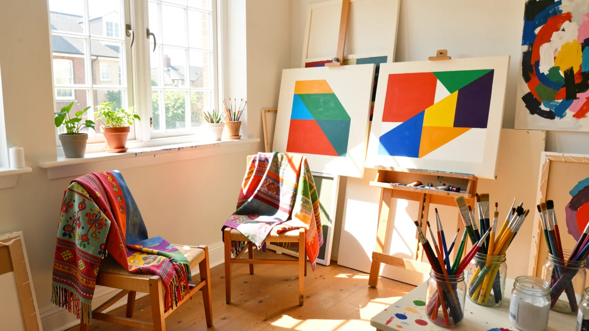

メアリー・ハイルマン：芸術は必ずしも退屈でなくても良いことを証明した画家
伝説的な抽象画家が86歳で亡くなり、その遺産として、色彩、ユーモア、そして「深刻」な芸術の世界をあまりにも真剣に受け止めないという姿勢が残された。

86歳。メアリー・ハイلمانが、アートの世界に自らの姿を映し、そして少しばかりの気取った態度を自覚させるために費やした時間です。彼女の訃報が伝えられたとき、アートコミュニティはただ一人の画家を失っただけでなく、高尚なアートの歴史と、明るく色鮮やかなキッチンや、さりげなく配置されたポップカルチャーの要素から得られる視覚的な喜びを、見事に融合させる方法を知っていた人物を失ったのです。
「深刻な」アートの問題
何十年もの間、現代アートの世界は、非常に特殊で、そして疲れるような雰囲気の中で運営されてきました。もし、アートが重厚で、陰鬱で、そして自分のカーボンフットプリントについて漠然とした罪悪感を抱かせないのであれば、それは本当にアートと言えるのでしょうか？私たちはこれを「威圧的な憂鬱」と呼びます。20世紀半ばのほとんどのアブストラクト画家は、互いに存在論的に優位に立とうと競い合い、あまりにも密度が高く、「重要」な作品を生み出しました。それらを見ようとするだけで、博士号と、深い憂鬱さを感じさせる何かが必要でした。
そして、ハイلمانが登場しました。彼女は、鮮やかな色、ユーモアのセンス、そして日常を無条件に愛する気持ちを備えたツールキットを持って現れました。彼女は単に形を描いたのではなく、哲学者の葬式ではなく、夏の午後のように感じられる感情を描きました。彼女は、ポップカルチャーをアバンギャルドと融合させる技術を習得し、写真に写るときに笑顔を見せないことを拒むような人物でなくても、パイオニアになり得ることを証明しました。
技巧、混沌、そして色彩
ハイلمانの秘訣は、いわゆる「高尚なアート」と「技巧」の間の恣意的な境界線を尊重することを拒否したことにありました。1960年代と70年代のアート界の権威者にとって、民俗芸術、織物、そして家庭的なモチーフは「劣ったもの」でした。ハイلمانは、そのような境界線を眺め、それは単なる提案に過ぎないと考えました。
彼女は、キャンバスを、まるでキルトや陶器の作品を扱うように、同じ敬意と遊び心を持って扱いました。それは、彼女が「単純」だからではありません。むしろ、その逆です。彼女の作品は構造的に洗練されており、視覚的なパズルのように機能する、複雑な抽象構図を利用していました。彼女は、抽象の言語を使って、生きることの言語について語りました。
ハイلمانの作品は、その時代の高尚なコンセプトのミニマリズムと、民俗芸術の親しみやすい暖かさとの間のギャップを埋めることで知られています。

彼女の制作プロセスは、積み重ねとテクスチャの美しく、リズミカルなダンスでした。彼女は、フィンガーペインティングの段階にある幼児のように、ただ絵の具を塗りたくっているわけではありませんでした（ただし、正直に言うと、私たちは皆、そのような自信を持ちたいと思っています）。彼女は、視覚的な語彙を構築していました。
ハイلمانの作品は、その時代の高尚なコンセプトのミニマリズムと、民俗芸術の親しみやすい暖かさとの間のギャップを埋めることで知られています。
なぜ気にするべきなのか（たとえギャラリーに行かないとしても）
「私はギャラリーには行かないし、ターゲットに行く。なぜこれが重要なのか？」と考えているかもしれません。それは、ハイلمانのキャリア全体が、美的な価値を再定義するための模範的な実践であったからです。彼女は、親しみやすさを達成するために、知性を犠牲にする必要はないことを教えてくれました。
現在、技術的には完璧だが精神的には空虚な、ジェネレーティブAIアートに夢中になっている世界において、ハイلمانの作品は、「人間的な」要素の重要なリマインダーとして機能します。彼女の作品には、生命力がありました。ユーモアのセンスがありました。そして、それは、それでも自分が住みたいと思う部屋にあるもののように見えるままで、深く感動させる可能性がありました。
彼女は単にアートの歴史に参加しただけでなく、それをからかい、飾り立て、そしてよりカラフルにしました。次にアート作品を見たときに、それが「重要」であるように努力しすぎているように感じたら、メアリー・ハイلمانを思い出してください。彼女はすでにその問題を解決しており、しかもはるかに優れた色彩で解決しました。
そこで、次回の美術館巡りのために、質問をさせてください。私たちは本当にアートの中に意味を探しているのか、それとも、それを楽しむことの許可を探しているだけなのでしょうか？
DeepSageの無料アカウントを作成して、記事を保存したり、クイズの結果を追跡したり、最新の情報をいち早く入手したりしましょう。